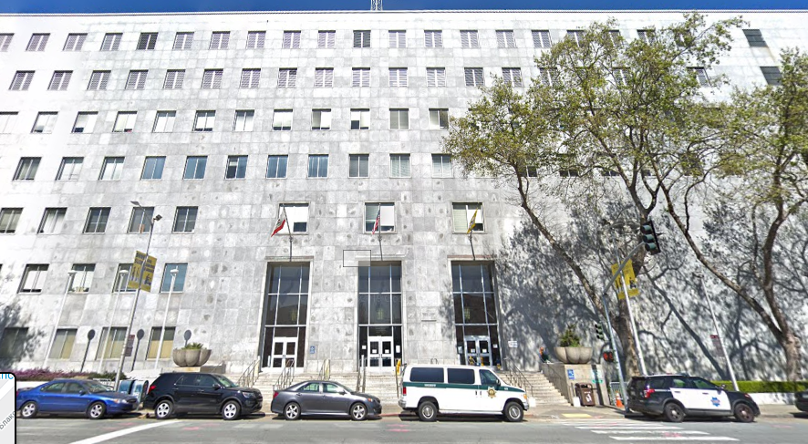

Анализ данных действий полиции в Сан-Франциско
Активность полиции в 2020
Первый вопрос шестого задания: что произошло после 10 недели 2020 года, почему такое падение количества происшествий?

Можно предположить, что начиная с 10-й недели стала активно обсуждаться пандемия, и жители Сан-Франциско начали изолироваться. Можно также предположить, что на работу в полицию стало выходить меньше сотрудников полиции и поэтому они стали писать меньше рапортов.
Первую гипотезу можно проверить, посмотрев на таймлайн: ВОЗ объявила о том что происходит пандемия 11 марта, как раз на 11-й неделе 2020. Вторую гипотезу проверить гораздо сложнее — нужны данные о посещаемости полицейскими полицейского участка. Возможно они тоже есть в открытом доступе как и карта происшествий, но я не изучали.
Но мы можем посмотреть на более свежие данные и распределение числа случаев в них.

Гистограмма распределения количества случаев по неделям
После большой ямы свзяанной с пандемией, есть значительный пик на 22-й неделе — именно на этой неделе, 30 мая начались протесты Black Lives Matter. Интересно, что несмотря на активно тиражируемый образ в американских СМИ о “мародерстве” протестующих количество зарегестрированных приступлений не привысило нормальное количество в такое же время года. Можно подумать, конечно, что это скомпенсировалось ямой изоляции в пандемию, но можем ли мы так просто утверждать о пандемии и протестах BLM как о независимых являениях? Некоторые исследователи связывают эти два события
Геолокации происшествий
Почему, согласно данным, на этом перекрестке (широта 37.77516, долгота –122.4036) — с 2018 г. по сегодня произошло 423 преступления на сексуальной почве и 76 мошенничеств? Что это нам говорит о возможностях и ограничениях пространственных данных?
Посмотрев на геолокацию предложенную в задании, можно увидеть суд: 
Изучив координаты

Первые
Можно кластеризовать случаи по повторяющимся координатам и получить те геометки где отмечено больше всего случаев. Вот топ 10 мест (слева количество сообщенных происшествий, справа геометка):
2502 : 37.78456014121181, -122.40733704162237
2178 : 37.7751608100771, -122.40363551943442
2138 : 37.786409612810886, -122.40803623744476
1764 : 37.76505133632968, -122.41966897380142
1431 : 37.72694991292525, -122.47603947349434
1362 : 37.7839325760642, -122.4125952775858
1357 : 37.77871942789032, -122.4147412230519
1288 : 37.78445272883687, -122.40849315881205
1178 : 37.78000586799482, -122.41193341005336
1149 : 37.781654260627704, -122.41550518013351Стоит уточнить, что это не лучший способ кластеризации: сейчас сообщения собираются по кластерам если у них сделана буквально одна и та же геометка. Мы не относим близко расположенные геометки в один кластер, и возможно это стоит попробовать сделать в будущем (размеры кластеров могут увеличиться и их распределение может измениться).

Во многом эти обнаруженные аномалии указывают на важность того, как данные собираются. Мы не можем воспринимать данные абстрактно, как будто бы они богом данные (этот каламбур, насколько мне известно, приписывают философу техники Михаилу Куртову). Данные произведены кем-то и в определенном контексте, и мы не можем так просто абстрагировать их от способов производства. Интересно отметить, что отчуждение данных от их способа производства похоже на описываемое в марксизме отчуждение рабочих от того что они производят. Стоит даже быть готовыми к тому, что сами данные смогут нам рассказать только о практиках сбора, нежели передадут нам некоторую “объективную” картину с той достоверностью что мы хотим.
Слабость пространственных данных можно увидеть в больших сложностях оценках валидности. Нам бывает гораздо проще отфильтровывать невалидные данные в другой форме — например текстовые сообщения мы иногда можем марикровать опираясь на внутреннюю структуру. В случае с геоданными мы не можем сделать никаких выводов о валидности геометки поодиночке — мы не знаем как она была произведена. Но имея достаточно просторное множество данных мы можем делать некоторые выводы касательно самих практик
сбора данных, что само по себе достаточно удивительно. Здесь возникают некоторые проблемы касательно того, какими критиериями мы пользуемся для того чтобы считать данные достаточно валидными для наших выводов и как мы артикулируем эти критерии.
Ссылки
- Можно посмотреть нотбук с обработкой данных